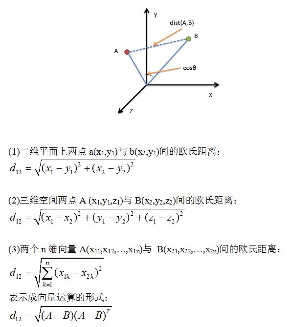
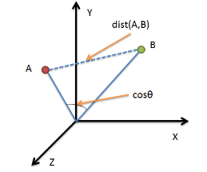

积累+学习
综述
所列的距离公式列表和代码如下：
- 闵可夫斯基距离(Minkowski Distance)
- 欧氏距离(Euclidean Distance)
- 曼哈顿距离(Manhattan Distance)
- 切比雪夫距离(Chebyshev Distance)
- 夹角余弦(Cosine)
- 汉明距离(Hamming distance)
- 杰卡德相似系数(Jaccard similarity coefficient)
读者可根据自己需求有选择的学习。因使用矢量编程的方法，距离计算得到了较大的简化。
其中欧氏距离与曼哈顿距离是比较常用的
欧氏距离

python 源码 - 三种实现
import numpy as np
vect1 = np.mat([1,2,3]);
vect2 = np.mat([2,3,4]);
dis = np.sqrt((vect1 - vect2) * (vect1 - vect2).T)
#sqrt(3)
print dis
dis = np.sqrt( np.sum( np.square(vect1 - vect2) ) )
print dis
dis = np.linalg.norm(vect1 - vect2)
print dis
曼哈顿距离(Manhattan Distance)

import numpy as np
vect1 = np.mat([1,2,3])
vect2 = np.mat([2,3,4])
dis = np.sum( np.abs(vect1-vect2) )
#3
print dis
夹角余弦（Cosine）
几何中夹角余弦可用来衡量两个向量方向的差异，机器学习中借用这一概念来衡量样本向量之间的差异

在二维空间中向量A($x_1$,$y_1$)与向量B($x_2$,$y_2$)的夹角余弦公式：
两个n维样本点A($x_{11}$,$x_{12}$,…,$x_{1n}$)与B($x_{21}$,$x_{22}$,…,$x_{2n}$)的夹角余弦类似的，对于两个n维样本点A($x_{11}$,$x_{12}$,…,$x_{1n}$)与B($x_{21}$,$x_{22}$,…,$x_{2n}$)，可以使用类似于夹角余弦的概念来衡量它们间的相似程度。
即
夹角余弦取值范围为[-1,1]。夹角余弦越大表示两个向量的夹角越小，夹角余弦越小表示两向量的夹角越大。当两个向量的方向重合时夹角余弦取最大值1，当两个向量的方向完全相反夹角余弦取最小值-1。
import numpy as np
vect1 = np.random.rand(4).astype(float)
vect2 = np.random.rand(4).astype(float)
print vect1
print vect2
print np.dot(vect1,vect2)/( np.linalg.norm(vect1) * np.linalg.norm(vect2) )